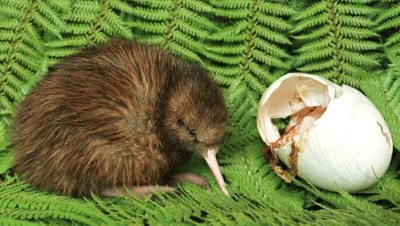

Los kiwis son criaturas tímidas y nocturnas con un sentido del olfato muy desarrollado merced a la existencia de verdaderos bigotes en torno al pico, tales bigotes son eficaces órganos olfativos. Otro rasgo generalmente inusual en un ave es la presencia de fosas nasales en la punta de su largo y filoso pico. Son omnívoros; para alimentarse incrustan el pico en el suelo en busca de lombrices, insectos y otros invertebrados. También comen fruta y, si la oportunidad se presenta, pequeños cangrejos de río, anfibios y anguilas.
Los machos se encargan de empollar los huevos (huevos que son los más grandes en relación a las proporciones del animal adulto), efectuándose la puesta durante diez semanas en nidos subterráneos semejantes a madrigueras, sin embargo ninguno de los progenitores se dedica a alimentar a las crías las cuales son nidífugas (apenas tienen lo suficientemente desarrollado el cuerpo salen del nido para alimentarse por cuenta propia).
Este es el párrafo de la sección